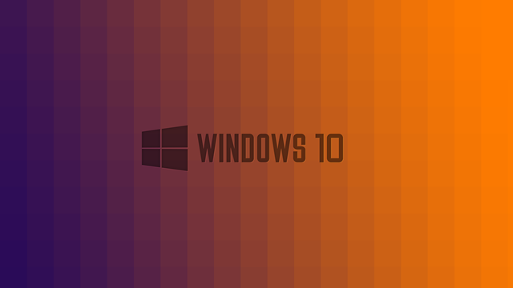

Format Attıktan Sonra Yüklenecek 26 Program!

1-Microsof visual c++ redistributable 2012(x64 veya x86 sürümünüze bağlı)(Bu programı kuruyorsunuz ve daha birçok c++ yazılımını kuracağız)
http://www.microsoft.com/en-us/download/details.aspx?id=30679
2-Microsoft visual c++ redistributable 2005
http://www.microsoft.com/en-us/download/details.aspx?id=3387
3-Microsoft visual c++ redistributable 2008
http://www.microsoft.com/en-us/download/details.aspx?id=29
4-Microsoft visual c++ redistributable 2010
http://www.microsoft.com/en-us/download/details.aspx?id=5555
5-Bazı iş arkadaş vb. görüşmeleri için skype
http://www.skype.com/tr/download-skype/skype-for-computer/
6-Dosya sıkıştırma ve depolama programı Winrar
http://www.gezginler.net/indir/winrar.html
7-Yazılımcılar için wampserver
http://www.wampserver.com/en/
8-Video müzik vb. için VLC media player
http://www.gezginler.net/indir/vlc-player.html
9-En iyi tarayıcılardan Google Chrome(veya firefox veya opera)
Google Chrome:
http://www.tamindir.com/google-chrome/
Mozilla Firefox:
https://www.mozilla.org/tr/firefox/new/
Opera:
http://www.opera.com/tr
10-Adobe Creative Cloud(Dreamweaver,photoshop,fireworks gibi programların en güncel sürümleri için)
http://www.adobe.com/tr/creativecloud.html
11-Yine yazılımcılar için dev c++
http://www.bloodshed.net/dev/devcpp.html
12-Notepad++
http://www.tamindir.com/notepad/
13-Filezilla(En iyi ftp sunucularından)
https://filezilla-project.org/
14-Telefonu bilgisayarda kamera olarak kullanmak için DroidCam Client
http://www.gezginler.net/indir/droidcam.html
15-Java(Birçok program oyun vb.çalıştırmak için kurmamız gerekli örneğin:minecraft)
https://www.java.com/tr/
16-Bir antivirüs gerekli ben şimdilik Avast kullanıyorum ama siz farklı bir antivirüsü tercih edebilirsiniz
https://www.avast.com/tr-tr/index
(Siz farklı bir antivirüs kullanabilirsiniz)
17-Adobe flash player (İnternetten video izlemek ve flash dosyalarını çalıştırmak için)
http://www.tamindir.com/adobe-flash-player/
18-Adobe reader (PDF dosyalarınız için)
http://get.adobe.com/tr/reader/
19-Microsoft Excel(Şirket işleri vb.)
http://microsoft-excel.tr.softonic.com/
20-Microsoft Powerpoint (Slayt hazırlamak ve sunmak için)
http://microsoft-powerpoint-2010.tr.softonic.com/
21-Ccleaner(programları silmek için browser’ın geçmişini vb. şeyleri silmek için)
http://www.gezginler.net/indir/ccleaner.html
22-İnternet Download Manager (İndirme hızınızı katlayın)
http://www.gezginler.net/indir/internet-download-manager.html
23-DirectX(En iyi oyun performansı için en güncel sürümünü tercih edin)
http://www.gezginler.net/indir/directx.html
24-Fraps
http://www.gezginler.net/indir/fraps.html
25-Cpu-Z(Bilgisayarın nasıl işlediğini parçalarının özelliklerini vb. bilgileri öğrenmek için)
http://www.gezginler.net/indir/cpu-z.html
26-Utorrent(İsteğe bağlı ama dosyaları sıkıştırarak indirdiği için hızlı bir indirme olanı sağlıyor)
http://www.gezginler.net/indir/utorrent.html
Kaynak: melihogul.wordpress.com
Etiketler: html, css, javascript